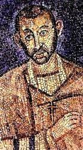

|
|
颂主新歌 |
|
1 Come, Holy Ghost, Who ever One 2 In will and deed, by heart and tongue, 3 Almighty Father, hear our cry
|
1.恳求圣灵从天降临，
|
|
https://www.mred365.cn/szxg/7217.html
|
|
|
|
|


Come, Holy Ghost, Who Ever One (Holley) https://youtu.be/anvB-mMTgZ8 - Give to our God Immortal Praise (Warrington)
https://youtu.be/c5oyeYngB28
| Text: | Come, Holy Ghost, Who ever one |
| Author: | St. Ambrose |
| Short Name: | St. Ambrose |
| Full Name: | Ambrose, Saint, Bishop of Milan, 340-397 |
| Birth Year (est.): | 340 |
| Death Year: | 397 |
Ambrose (b. Treves, Germany, 340; d. Milan, Italy, 397),

one of the great Latin church fathers, is remembered best for his preaching, his struggle against the Arian heresy, and his introduction of metrical and antiphonal singing into the Western church. Ambrose was trained in legal studies and distinguished himself in a civic career, becoming a consul in Northern Italy. When the bishop of Milan, an Arian, died in 374, the people demanded that Ambrose, who was not ordained or even baptized, become the bishop. He was promptly baptized and ordained, and he remained bishop of Milan until his death. Ambrose successfully resisted the Arian heresy and the attempts of the Roman emperors to dominate the church. His most famous convert and disciple was Augustine. Of the many hymns sometimes attributed to Ambrose, only a handful are thought to be authentic.
Bert Polman
Tune Information
| Title: | WARRINGTON |
| Composer: | Ralph Harrison (1784) |
| Meter: | 8.8.8.8 |
| Incipit: | 55435 11271 32232 |
| Key: | A♭ Major |
| Copyright: | Public Domain |
聖安博 「安波羅修」Sanctus Ambrosius 340－397[編輯]
|
奧古斯都特來佛里的安博 Sanctus Ambrosius |
|
|---|---|
| 米蘭主教 | |
_sant'ambrogio.jpg)
聖安博聖像
|
|
| 主教區 | 米蘭教區 |
| 任命 | 374年 |
| 卸任 | 397年4月4日 |
| 聖秩 | |
| 晉牧 | 於374年12月7日晉牧 |
| 個人資料 | |
| 出生 | 約340年 羅馬帝國比利時高盧奧古斯都特來佛里 （今德國特里爾） |
| 逝世 | 397年4月4日（56或57歲） 羅馬帝國義大利梅迪奧蘭 （今義大利米蘭） |
|
奧古斯都特來佛里的安博 Sanctus Ambrosius |
|
|---|---|
 |
|
| 精修聖人兼教會聖師 | |
| 敬禮於 |
天主教會 正教會 東方正統教會 普世聖公宗 信義宗 |
| 主要朝聖地 | 聖安波羅修聖殿 |
| 瞻禮 | 12月7日 |
聖安博，舊譯作「安博羅削」，新教譯作「安波羅修」。（拉丁語：Sanctus Ambrosius，義大利語：Sant'Ambrogio，英文中常作 Ambrose，約340年－397年4月4日），任米蘭總主教，4世紀基督教著名的拉丁教父之一。他也是天主教會公認的四大教會聖師之一。
生平簡介[編輯]

約340年，聖安博出生於特里爾一個有名望的基督教家庭。父親曾任納博訥高盧行省總督，是一位基督徒，[1]母親則是受過高等教育的虔誠婦女。聖安博從小就接受希臘文、文學、法律、修辭學、哲學的訓練，父母對他寄予厚望，他也繼承父親的衣缽投身公共政務。聖安博於西元370年左右，完成法律的訓練曾當執業律師，大約在372年，聖安博擔任利古里亞與埃米利亞的行省總督，總部是設在相當於羅馬帝國第二首都的米蘭。聖安博展現了自己傑出的行政及演說能力，他的公正無私也獲得眾人的讚譽。[2]
晉牧[編輯]
374年，亞流派的米蘭主教死了。教會內的阿里烏教派與尼西亞教派的信徒相爭，將形成分裂。聖安博基於羅馬總督的職責所在，走進教堂去平息風波。當他正向群眾講話的時候，忽然有一個孩子的聲音喊著說：「讓安博作主教！」會眾以為是出於天主的聲音，兩派齊聲唱和：「阿們！」歡呼擁立他為主教。[3] 不過，那時他只是一個慕道者，還未受洗禮，他向群眾表示自己乃罪人，不配擔任神職，便返回自己家中，但是信徒卻舉行大規模的遊行，該省的主教們也批准這次選舉有效，聖安博寫信給皇帝說明此事不妥，但皇帝瓦倫提尼安二世卻回信贊成他作主教[4]，於是，從權在八天之內，先受洗而晉牧。
貢獻[編輯]
安波羅修上任後，立志反對亞流主義，他在政治上參與對抗阿里烏教派的工作，主動將亞流主義從以利哩古（Illyricum，今伊利里亞）驅逐出去，但他也在380年代，被支持亞流主義的皇后所逼迫，要他把當地教會交給亞流的跟隨者管理，在此過程中，他的生命受到威脅，若不是米蘭的市民公開支持，恐怕他已經遭遇不測。他說：「主教沒有權力把神的教會交出來。」安波羅修一生致力於使教會免受皇帝干涉，[5]如390年夏天，帖撒羅尼迦城的駐軍司令因為拒絕百姓要求釋放一位人民喜愛的戰車手，百姓將駐軍司令殺了，皇帝狄奧多西一世為了給他報仇，不顧安波羅修的反對，屠殺了大批居民，及後皇帝懊悔但為時已晚，七千多有罪或無辜的居民已經死了。安波羅修給狄奧多西寫了一封密函，告訴他，皇帝若不公開悔罪就要把他開除教籍，狄奧多西只好讓步，在教會裡當眾認罪、請求饒恕。安波羅修是第一位能以主教地位影響統治者的教會領袖。安波羅修在歷史上是功多於過的，他堅持政教分離，教會有教會的權柄，政府有政府的權柄，二者不應該相混和，但在某些情況下，他認為皇帝也應該受到教會的約束，他說：「皇帝是在教會之內，而非在教會之上。」[6]
由於安波羅修堅持政教分離，除了擔任皇帝的顧問，干預羅馬帝國的宗教政策外幾乎沒有參與政治。在安波羅修堅持政教分離的影響下，成功令西部皇帝格拉提安下令驅逐異教。公元382年，格拉提安強佔了異教祭司和維斯塔貞女的收入，並禁止遺贈地產給予他們；祭司學院的財產亦被沒收，異教祭司的特權和豁免權也被取消[7]。在安波羅修建議下，格拉提安同時宣告所有異教寺廟的收入全數充公到國庫，並把羅馬多神教的重要祭壇「勝利女神祭壇」拆毀。由於他堅持政教分離，所以他於公元384年阻止了信奉異教議員的重建勝利女神祭壇。安波羅修還成功說服羅馬帝國皇帝狄奧多西一世於公元389年下達「狄奧多西詔書」，其內容主要為禁止異教活動，取消異教假日，熄滅異教聖火，解散維斯塔貞女，處罰援助異教者等等。
在神學方面[編輯]
{kind=link}
安波羅修以神學著作聞名，乃天主教教會聖師之一。然而他的神學著作大多是秉承希臘神學家的思想，對於罪與恩，有較深的感覺。他的思想趨向實踐方面，討論基督教倫理學；對於教會聖詩的發展，也大有貢獻。[8] 安波羅修的希臘文造詣極高，因此能把東方最優秀的尼西亞神學，寫成清晰的拉丁文，其中最重要的作品包括《論信仰》（On the Faith）和《論聖神》（On the Holy Spirit）。[9]
在教會音樂方面[編輯]
安波羅修是推廣讚美詩的功臣。[10] 他建立了教會調式。採用四個希臘音階定為「正格調式」音階。成為今日音調系統的基礎。[11] 他認為詩歌有對抗異端的價值，所以歌詞中必提到基督教的教訓。 [12]
安波羅修的讚美詩[編輯]
-
1、萬物的創造主，至高的天主，
- 熠熠的星空的統治者，
- 你給白天披上美麗的光彩，
- 給黑夜圍上溫柔的憩息。[13]
-
2、那睡眠使疲倦的肢體復甦，
- 適於辛勞，再度供我驅使，
- 輕輕撫慰疲勞過度的心田，
- 安慰著憂愁的悲傷安靜休息。
-
3、我們為過去的時日感謝你，
- 我們為繼來的夜向你禱告，
- 啊！幫助我輩罪人向你唱起，
- 誠心所願讚美你的詩句。
-
4、解脫我們對所有肉慾的渴求，
- 讓我們的心在你裡面歇息！
- 也不使貪婪的惡魔安排陷阱，
- 使我們的安寧沒有罪戾的恐懼。
-
5、基督與聖父本為一體，
- 聖神，聖父與聖子，
- 天主凌駕一切，全能的主宰，
- 保護我們，崇高的三位一體真神，
- 我們獻上禱告。
與皇權的關係[編輯]
安波羅修自從成為米蘭主教後，不僅掌握西羅馬帝國的宗教權，也成為皇帝之師。格雷帝征討哥德族時不但將三位一體的信條公佈在軍中，遇難時還呼喊安波羅修的名字，其影響力由此可見一般。特別是後來和皇太后賈絲泰娜（Justina）為了是否要將米蘭堂讓給阿里烏教派教徒以及軍隊包圍波西亞教堂一事，安波羅修一連五天在米蘭大教堂內講道，誓死守護教堂。最後，皇帝撤兵，軍隊對信徒態度和藹並且握手言歡。這是羅馬歷史上第一次的教會教權與政府皇權的正面衝突，自此義大利整個成為基督教世界。[14]
參見[編輯]
Ralph Harrison (1748–1810)
Ralph Harrison (1748–1810) was an English nonconformist minister, composer[1] and tutor.
Life[edit]
The son of William Harrison, presbyterian minister of Chinley, Derbyshire, was born at Chinley on 10 September 1748. In 1763 he entered Warrington Academy, of which John Aikin was divinity tutor. In 1769 he was appointed assistant to Joseph Fownes (1715–1789) as minister of High Street Chapel, Shrewsbury.
On 29 December (elected 17 November) 1771 he succeeded Joseph Mottershead at Cross Street Chapel, Manchester. His theology was Arian. From 1774 he kept a school, and gained a reputation as a teacher, among his pupils being the sons of the Marquess of Waterford. From the institution of the Manchester Academy (22 February 1786) till 1789 Harrison was professor of classics and belles-lettres there. He died, after a long illness, on 10 November 1810.
Works[edit]
Harrison published:
- ‘Institutes of English Grammar,’ &c., Manchester, 1777.
- ‘Sacred Harmony,’ &c. [1786], 4to, 2 vols. (contains psalm tunes of his composition).
- ‘A Sermon … at Manchester … on occasion of the Establishment of an Academy,’ &c., Warrington [1786].
- ‘Account of the Author,’ prefixed to John Seddon's posthumous ‘Discourses,’ Warrington, 1793.
Hymn tunes composed:
Posthumous was
- ‘Sermons,’ &c., 1813, (prefixed is ‘Biographical Memoir’ by his son William). Also some geographical manuals.
Family[edit]
Soon after settling in Manchester, he married Ann, daughter of John Touchet. His son William (d. 30 Nov. 1859, aged 80) was minister at Blackley, Lancashire (1803–54); another son, John, (1786–1853), was a Manchester merchant and father of John Harrison, Ph.D. (d. 1866), minister at Chowbent, Lancashire (1838–47), Brixton, Surrey (1847–61), and Ipswich (1861–3).
References[edit]
- ^ "Ralph Harrison". The Canterbury Dictionary of Hymnology. Canterbury Press. Retrieved 17 June 2018.
- ^ a b c d e f "Ralph Harrison". HymnTime. Retrieved 17 June 2018.
- ^ a b Hymns and Psalms. London: Methodist Publishing House. 1983. p. cxvi. ISBN 0946550018.
- . Dictionary of National Biography. London: Smith, Elder & Co. 1885–1900.
- Attribution
This article incorporates text from a publication now in the public domain: "Harrison, Ralph". Dictionary of National Biography. London: Smith, Elder & Co. 1885–1900.
https://en.wikipedia.org/wiki/Ralph_Harrison
Ambrosian hymns
The Ambrosian hymns are a collection of early hymns of the Latin rite, whose core of four hymns were by Ambrose of Milan in the 4th century.
The hymns of this core were enriched with another eleven to form the Old Hymnal, which spread from the Ambrosian Rite of Milan throughout Lombard Italy, Visigothic Spain, Anglo-Saxon England and the Frankish Empire during the early medieval period (6th to 8th centuries); in this context, therefore, the term “Ambrosian” does not imply authorship by Ambrose himself, to whom only four hymns are attributed with certainty, but includes all Latin hymns composed in the style of the Old Hymnal.
The Frankish Hymnal, and to a lesser extent the “Mozarabic (Spanish) Hymnal” represent a reorganisation of the Old Hymnal undertaken in the 8th century. In the 9th century, the Frankish Hymnal was in turn re-organised and expanded, resulting in the high medieval New Hymnal of the Benedictine order, which spread rapidly throughout Europe in the 10th century, containing on the order of 150 hymns in total.
Origin[edit]
The earliest Latin hymns were built on the template of the hymns (ῠ̔́μνοι) of the Greek and Syriach churches of the second to third centuries. The first Latin hymns were composed by Hilary of Poitiers (d. 367), who had spent in Asia Minor some years of exile from his see, and had thus become acquainted with the hymns of the Eastern Church; his Liber Hymnorum has not survived. Hilary, who is mentioned by Isidore of Seville as the first to compose Latin hymns, and Ambrose (d. 397), styled by Dreves (1893) “the Father of Church-song”, are linked together as pioneers of Western hymnody.
The Old Hymnal consists of the extant Latin hymns composed during the 4th and 5th centuries. The hymns of the Old Hymnal are in a severe style, clothing Christian ideas in classical phraseology, and yet appealing to popular tastes. At the core of these is the hymn Te Deum. Since the spread of the Old Hymnal is closely associated with the Ambrosian Rite, Te Deum had long been known as “the Ambrosian Hymn”. While it certainly dates to the 4th century, Ambrose's authorship is no longer taken for granted, the hymn being variously ascribed to Hilary, Augustine of Hippo, or Nicetas of Remesiana.[1]
Isidore, who died in 636, testifies to the spread of the custom from Milan throughout the whole of the West, and first refers to the hymns as “Ambrosian”.[2]
Metre[edit]
The Ambrosian strophe has four verses of iambic dimeters (eight syllables), e. g. —
- Aeterne rerum Conditor, / noctem diemque qui regis, / et temporum das tempora / ut alleves fastidium.
The metre differs but slightly from the rhythm of prose, is easy to construct and to memorize, adapts itself very well to all kinds of subjects, offers sufficient metric variety in the odd feet (which may be either iambic or spondaic), while the form of the strophe lends itself well to musical settings (as the English accentual counterpart of the metric and strophic form illustrates). This poetic form has always been the favourite for liturgical hymns, as the Roman Breviary will show at a glance. But in earlier times the form was almost exclusively used, down to and beyond the eleventh century.
Out of 150 hymns in the eleventh-century Benedictine hymnals, for example, not a dozen are in other metres; and the Ambrosian Breviary re-edited by Charles Borromeo in 1582 has its hymns in that metre almost exclusively. It should be said, however, that even in the days of Ambrose the classical metres were slowly giving place to accentual ones, as his work occasionally shows; while in subsequent ages, down to the reform of the Breviary under pope Urban VIII, hymns were composed most largely by accented measure.
Ambrosian authorship[edit]
That Ambrose himself is the author of some hymns is not under dispute. Like Hilary, Ambrose was also a “Hammer of the Arians”. Answering their complaints on this head, he says: “Assuredly I do not deny it ... All strive to confess their faith and know how to declare in verse the Father and the Son and the Holy Ghost.” And Augustine of Hippo[3] speaks of the occasion when the hymns were introduced by Ambrose to be sung “according to the fashion of the East”. However, the term “Ambrosian” does not imply authorship by Ambrose himself. The term, (Hymni Ambrosiani) is used in the rule of St. Benedict, and already Walafridus Strabo[4] notes that, while Benedict styled Ambrosianos the hymns to be used in the canonical hours, the term is to be understood as referring both to hymns composed by Ambrose, and to hymns composed by others who followed in his form. Strabo further remarks that many hymns were wrongly supposed to be Ambrose's, including some “which have no logical coherence and exhibit an awkwardness alien to the style of Ambrose”.
H. A. Daniel, in his Thesaurus Hymnologicus (1841–51) still mistakenly attributed seven hymns to Hilary, two of which (Lucis largitor splendide and Beata nobis gaudia) were considered by hymnologists generally to have had good reason for the ascription, until Blume (1897)[5] showed the error underlying the ascription.
The two hymns have the metric and strophic cast peculiar to the authenticated hymns of Ambrose and to the hymns which were afterwards composed on the model. Daniel gave no less than ninety-two Ambrosian hymns, under of “S. Ambrosius et Ambrosiani”.
Similarly, Migne, in Patrologia Latina 17 (1845) edited Hymni S. Ambrosio attributi, without attempting to decide which hymns of the Old Hymnal are genuinely due to Ambrose.
Modern hymnology has reduced the number of hymns for which Ambrosian authorship is plausible to about fifteen, including uncertain cases. The Maurists limited the number they would ascribe to St. Ambrose to twelve. Luigi Biraghi (1862) and Dreves (1893) raised the figure to eighteen.
Chevalier is criticised minutely and elaborately by Blume for his Ambrosian indications: twenty without reservation, seven “(S. Ambrosius)”, two unbracketed but with a “?”, seven with bracket and question-mark, and eight with a varied lot of brackets, question-marks, and simultaneous possible ascriptions to other hymnodists.
Only four hymns are universally conceded to be authentic:
- 1. Aeterne rerum conditor (OH 2);
- 2. Deus creator omnium (OH 26);
- 3. Jam surgit hora tertia (OH 17);
- 4. Veni redemptor gentium [= Intende qui regis Israel] (OH 34).
With respect to the first three, Augustine quotes from them and directly credits their authorship to Ambrose. Internal evidence for No. 1 is found in many verbal and phrasal correspondences between strophes 4-7 and the “Hexaëmeron” of the Bishop.[6] Augustine also appears to refer to No. 4 (to the third verse of the fourth strophe, Geminae Gigas substantiae) when he says: “This going forth of our Giant [Gigantis] is briefly and beautifully hymned by Blessed Ambrose”. Other attributions to Ambrose are due to Pope Celestine V (430), Faustus, Bishop of Riez (455) and to Cassiodorus (died 575).
Of these four hymns, only No. 1 is now found in the Roman Breviary. It is sung at Lauds on Sunday from the Octave of the Epiphany to the first Sunday in Lent, and from the Sunday nearest to the first day of October until Advent. There are numerous translations into English, of which that by Cardinal Newman is given in the Marquess of Bute's Breviary (trans. 1879).[7]
The additional eight tunes and/or hymns credited to St. Ambrose by the Benedictine editors are:
- (5) Illuminans altissimus (OH 35) Epiphany;
- (6) Aeterna Christi munera (OH 44) Martyrs;
- (7) Splendor paternae gloriae (OH 8) Lauds, Monday; in Mode 1 this is both tune and words, but a second tune, to the words, was called 'Winchester New'.
- (8) Orabo mente dominum (now recognised as part of Bis ternas horas explicans, OH 19);
- (9) Somno refectis artubus (NH 14);[8]
- (10) Consors paterni luminis (OH 51, NH 17);
- (11) O lux beata Trinitas (NH 1);
- (12) Fit porta Christi pervia (NH 94).
The Roman Breviary parcels No. 6 out into two hymns: for Martyrs (beginning with a strophe not belonging to the hymn (Christo profusum sanguinem); and for Apostles (Aeterna Christi munera). No. 7 is assigned in the Roman Breviary to Monday at Lauds, from the Octave of the Epiphany to the first Sunday in Lent and from the Octave of Pentecost to Advent. Nos. 9, 10, 11 are also in the Roman Breviary. (No. 11, however, being altered into Jam sol recedit igneus. Nos. 9–12 have verbal or phrasal correspondences with acknowledged hymns by Ambrose. No. 8 remains to be considered. The Maurists give it to Ambrose with some hesitation, because of its prosodial ruggedness, and because they knew it not to be a fragment (six verses) of a longer poem, and the (apparently) six-lined form of strophe puzzled them. Daniel pointed out (Thes., I, 23, 24; IV, 13) that it is a fragment of the longer hymn (in strophes of four lines), Bis ternas horas explicans, and credited it to Ambrose without hesitation.
The 18 hymns attributed to Ambrose by Biraghi (1862) are 1–7 above, and the following:
- Nunc sancte nobis spiritus;
- (OH 20) Rector potens, verax Deus Terce (Roman Breviary);
- (NH 10) Rerum Deus Tenax Vigor Sext (Roman Breviary);
- (OH 43) Amore Christi nobilis None (Roman Breviary);
- Agnes beatae virginis;
- (OH 39) Hic est dies verus dei;
- Victor nabor, felix pii;
- Grates tibi Jesu novas;
- (OH 42) Apostolorum passio;
- Apostolorum supparem; ;
- Jesu corona virginum office of virgins (Roman Breviary).
Biraghi's list received the support of Dreves (1893) and of Blume (1901), but 20th-century scholarship has tended to reduce the number of hymns attributable to Ambrose. Helmut Gneuss (1968) accepts only hymns 1–4 as certainly composed by Ambrose, and admits possible Ambrosian authorship for a further six (three from the Benedictine list, three from Biraghi's list):[9] Illuminans altissimus (OH 35), Aeterna Christi munera (OH 44), Splendor paternae gloriae (OH 8), Hic est dies verus dei (OH 39), Apostolorum passio (OH 42), Amore Christi nobilis (OH 43).
Hymnals[edit]
The term “Old Hymnal” refers to Benedictine hymnals of the 6th to 8th centuries. Gneuss' (1968) distinguished the core “Old Hymnal I” of the 6th century, with about 15 hymns, from the 8th-century “Old Hymnal II”, with about 25 hymns, including both additions and deletions in comparison with Old Hymnal I.[10] Gneuss (1974) renamed his “Old Hymnal II” to “Frankish Hymnal”.[11] The Frankish Hymnal represents a revision of the Old Hymnal taking place in the Frankish Empire during the 8th to early 9th centuries. By contrast, the Old Hymnal came to Anglo-Saxon England with the Gregorian mission, and the Anglo-Saxon church does not seem to have adopted the Frankish Hymnal. Sometimes also distinguished is a “Mozarabic Hymnal” or “Spanish Hymnal”, which adopted some but not all innovations of the Frankish Hymnal.[12]
The Frankish Hymnal itself was replaced by the so-called New Hymnal, beginning in the 9th century. This development was possibly associated with the reforms of Benedict of Aniane, but its rapid success also suggests support form the secular authorities (the Carolingians, viz. Louis the Pious and his successors). The New Hymnal spread rapidly throughout Europe by the early 10th century, and reached England with the English Benedictine Reform in the late 10th century. The earliest extant form of the New Hymnal has 38 hymns. Gneuss (1968) lists a total of 133 hymns of the New Hymnal based on English Benedictine manuscripts of the 10th and 11th centuries.[13]
The Cistercian order in the 12th century again simplified the New Hymnal to a core of 34 hymns which they thought were purely Ambrosian, but this was again expanded with an additional 25 hymns in 1147. Peter Abelard composed more than 90 entirely new hymns, and large numbers of further new hymns were composed by members of the Franciscans and Dominicans in the 13th century, resulting in a very large body of Latin hymns beyond the Benedictine New Hymnal preserved in manuscripts of the late medieval period.[14] The New Hymnal was substantially revised in the 17th century, under the humanist Pope Urban VIII, whose alterations are inherited in the current-day Roman Breviary.
List of Hymns[edit]
Gneuss (1968) lists 133 hymns of the New Hymnal, based on their sequence in Durham Cathedral Library B.III.32. Gneuss' index of the “Old Hymnal” includes hymns of the Frankish Hymnal (called “Old Hymnal II” in Gneuss 1968).[9] Milfull (1996) extends the list of New Hymnal hymns from English manuscripts to 164.[15]
Old Hymnal[edit]
https://en.wikipedia.org/wiki/Ambrosian_hymns